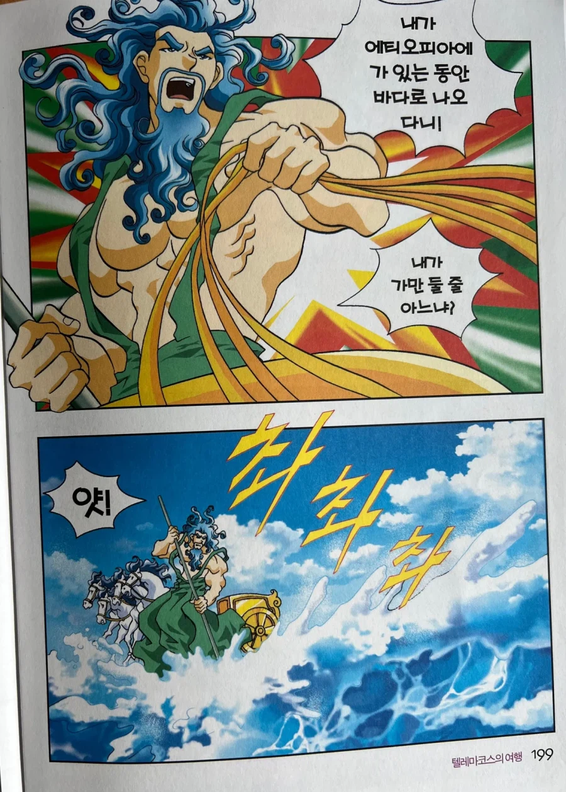
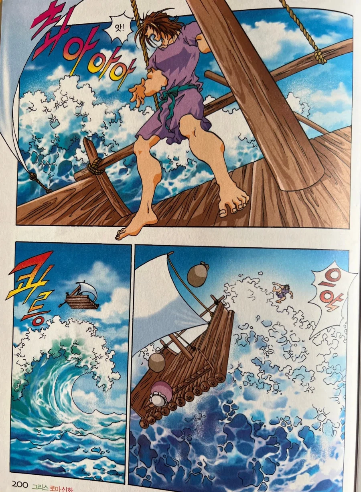
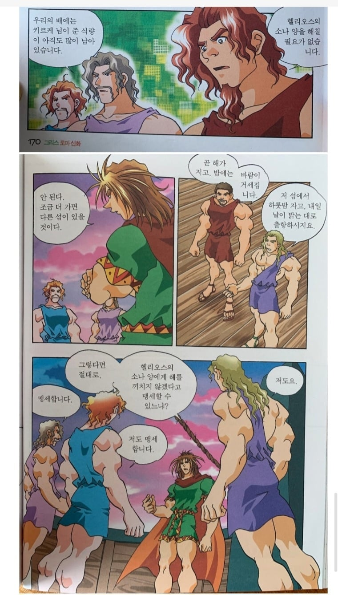
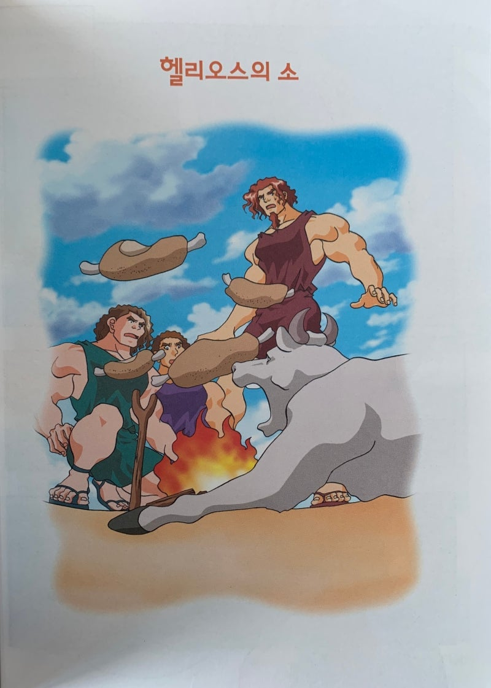
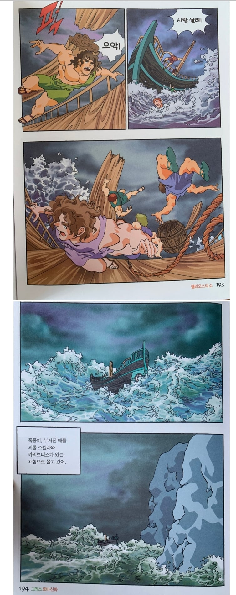
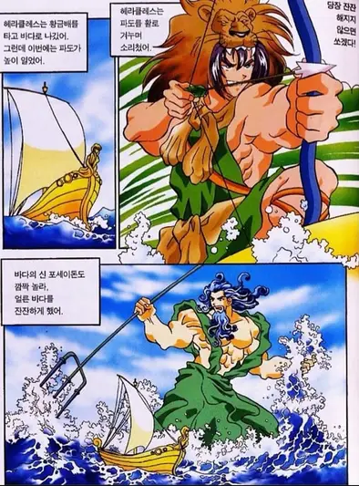
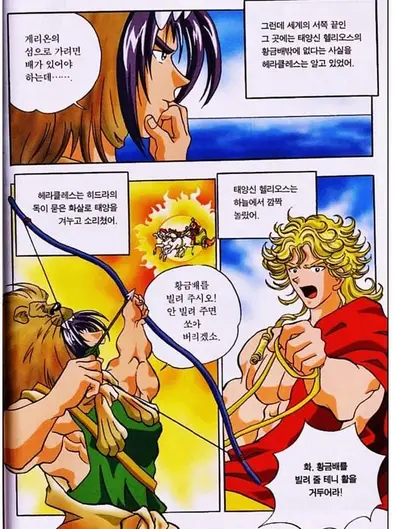
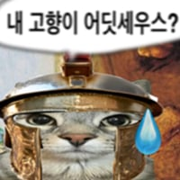

업보 쌓고 부하들 통제 못해서 신에게 당함


길





업보 쌓고 부하들 통제 못해서 신에게 당함


길


ㅋㅋㅋ헤라클레스는 그래도 반신이니깐..
그보다는 회장님 피붙이라서 쪼는거 아님? ㅋㅋ
어어 죽지도 못하는데 히드라 독한번 당해볼래
해라클레스는 기가스와 12신들 사이의 전쟁인 기간토마키아에서 승리하기 위해 필수적인 존재임. 얘가 없으면 전쟁에서 이길 수 없다는 예언이 있음. 그래서 꼬와도 죽이거나 병신 만들 수가 없음. ㅋㅋㅋㅋ
나 제우스 아들
그리고 내 손에 히드라 독화살
없어도 너네 패죽이기 가능
역시 혈연


저 독화살이 불사여도 고통은 받아서 저거 맞은 얘가 불사의 몸을 포기할 정도임
무슨독이었지 저게? 히드라 목에서 뽑은 독이었나
ㅇㅇ 히드라 독임
애
헤라클레스가 저거뒤집어쓰고 스스로 화장해서 승천함
뒤집어쓴게 아니라 와이프였나 질투하던배신자였나 무튼 헤라클레스 옷에 독을 절여놔가지고 그거 입었는데 옷이 안벗겨지면서 중독되서 그런걸로 저 만화책에 나왔던것같았는디 기억이 가물가물하네
ㅇㅇ 그거 그래서 뒤집어쓴거라고 표현하딘함.
마누라가 무슨 옆에서 속닥거린 신새끼한테.속아서 부엇다가 살다벗겨져서 뭐 자살하고 그랫던거같음
헤라클레스는 히드라의 독이 묻은 화살로 네소스를 죽였다.
네소스는 자신의 피가 사랑을 되찾아 준다고 데이아네이라를 속였다.
그 피가 묻은 옷을 입은 헤라클레스는 독에 중독되어 죽었다.
오 맞아 이거야!!
애 얘 구분 좀 해라
그럼 죽어(간단 명료)
차라리 죽는게 나은 고통..
히드라독은 신도 불사 반납 할테니까 제발 죽여줘 하는거라서
파도랑 태양에 활 겨누고 협박하는 미친 놈을 어케 이겨
근데 아폴론은 해쏘면된다치고 포세이돈은 어딜노리는거냐 걍 바다쏘면됨?
오디세우스는 꾀많은 플레이어
헤라클레스는 그냥 존나 쌘 벨런스 파괴자
헤라클레스가 실제로 어느정도임? 트로이목마 참전하면 오디세우스, 아가멤논 다 씹어먹고 혼자 다 이김?
걔네가 목마로 통과하는 성벽 헤라클레스는 맨손으로 부술걸
최고신 제우스 아들인 반인반신인데 밸붕으로 강해서 시련이랍시고 신이 주는 퀘스트도 여흥수준으로 클리어하고 더강해짐. 걍 신화로봐야지 역사로보면안댐
헤라클레스는 라오메돈 왕에게 약속한 보상을 요구했으나, 불사의 말을 주기 아까웠는지 포세이돈과 아폴론 때와 마찬가지로 보수 한 푼 주지 않고 내쫓아 버렸다. 분노한 헤라클레스는 이후 6척의 배와 텔라몬, 오이클레스 등의 동료와 함께 트로이를 침공한다. 헤라클레스는 압도적인 힘으로 트로이를 박살 내고 신들과 자신을 기만했던 라오메돈 왕을 죽였다.
트로이 문 앞에서 길 한마디면 트로이는 역사속에서 삭제됨
암만 인간계에서 짱 쎄봐야 갓난아기때 헤라 젖빨다가 너무 쎄게빨아서 뿜어진 모유가 은하수가 된 헤라클레스한테 비비지못함
공식으로 신임
삼촌들 자꾸 까불면 아빠불러온다?
아빠 안불러도 이긴다는거임
헤라클레스는 하늘주딱 아들이잖아
I have hydra poison
